Showcase Hub
Orchard Vale Theme Demos
Explore Orchard Vale in apps, editorial pages, and asset galleries, or follow the setup guide to use the theme in your own project.
Recommended Tour — From Tone to Production Vocabulary
Follow these six stops in order to see how Orchard Vale scales from warm editorial reading up to dense dashboards and reusable developer specimens.
- 01 Friendly Town Feel the tone & parchment rhythm
-
02
 Morning Briefing
Scan mixed daily signals & triage
Morning Briefing
Scan mixed daily signals & triage
-
03
 Scholar's Field Report
Read sourced analysis & tables
Scholar's Field Report
Read sourced analysis & tables
- 04 Prosperity Grove Ledger Inspect charts, meters & dialogs
- 05 Command Center Push dense operations complexity
- 06 Asset Pattern Library Browse assets and component examples
All Destinations
Showing 12 of 12 destinations
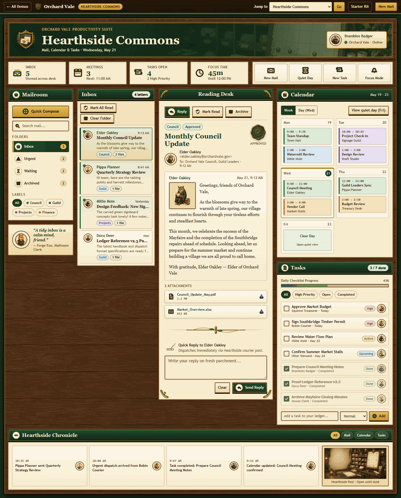
New
Flagship App
Mail & Calendar
Hearthside Commons
Mail, calendar, and personal task workspace uniting inbox triage, weekly time blocks, focus timers, and quick composer dialogs in one calm village hub.
Open Demo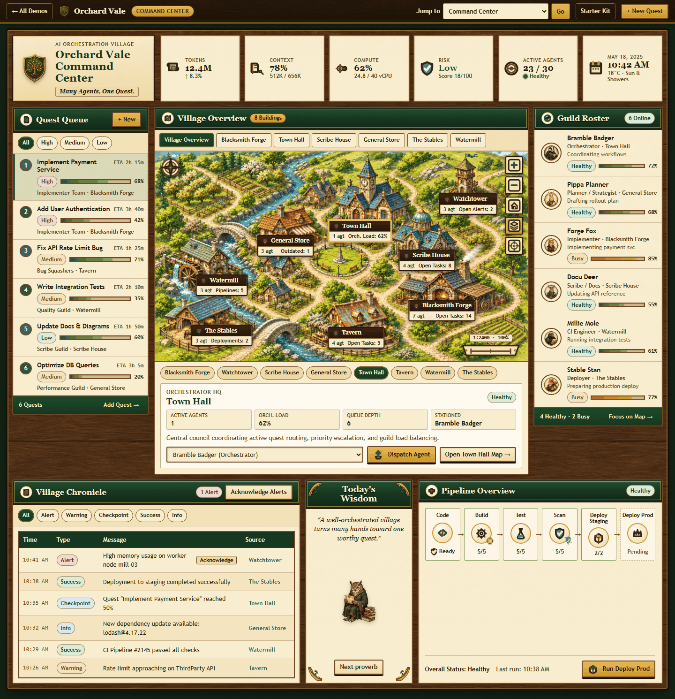
Flagship App
Operations
Command Center
The dense operations showcase: live situation map, alert queue, system health charts, response workflow, dependencies, roster, and event ledger.
Open Demo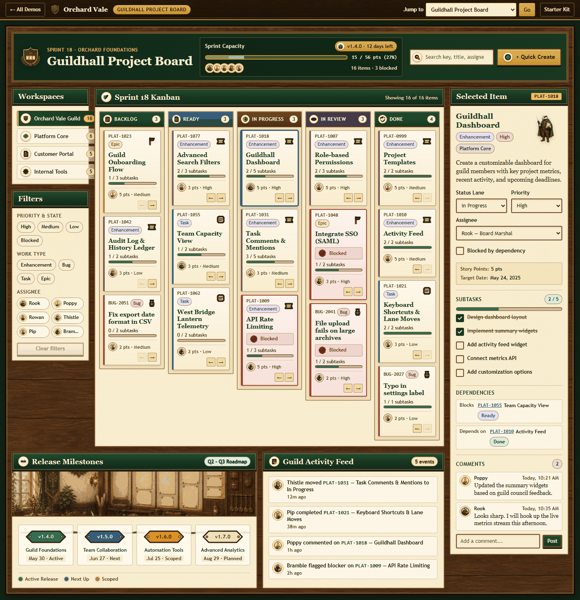
Flagship App
Kanban & Planning
Guildhall Project Board
Consolidated Kanban and planning flagship with top controls, five lanes, dense task cards, selected-card details, milestones, helper roster, and activity feed.
Open Demo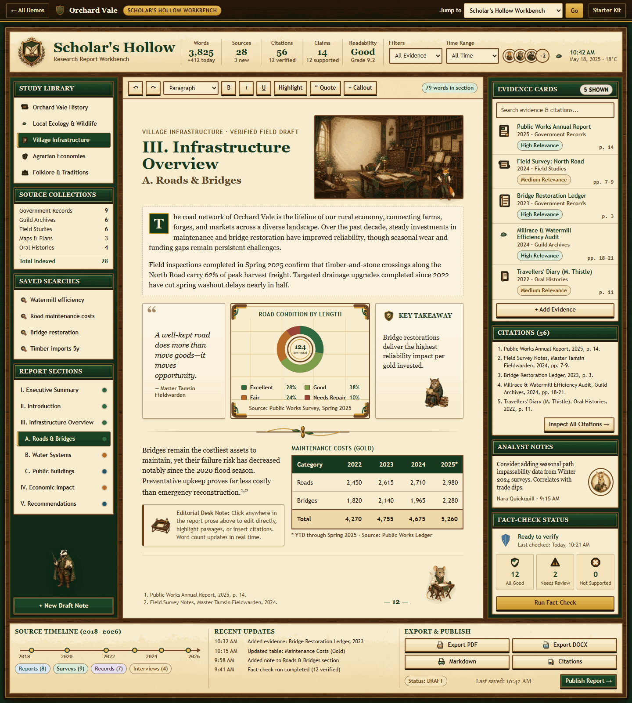
Flagship App
Research Workbench
Scholar's Hollow Workbench
Research-and-writing workspace with report metrics, study library, document editor, evidence cards, citations, fact-checking, and export controls.
Open Demo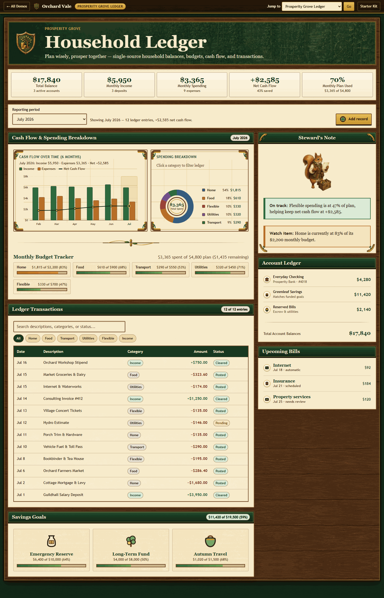
Flagship App
Finance & Data
Prosperity Grove Ledger
Data-heavy household ledger with account balances, cash-flow bars, budget meters, transactions, goals, upcoming bills, period controls, and record dialogs.
Open Demo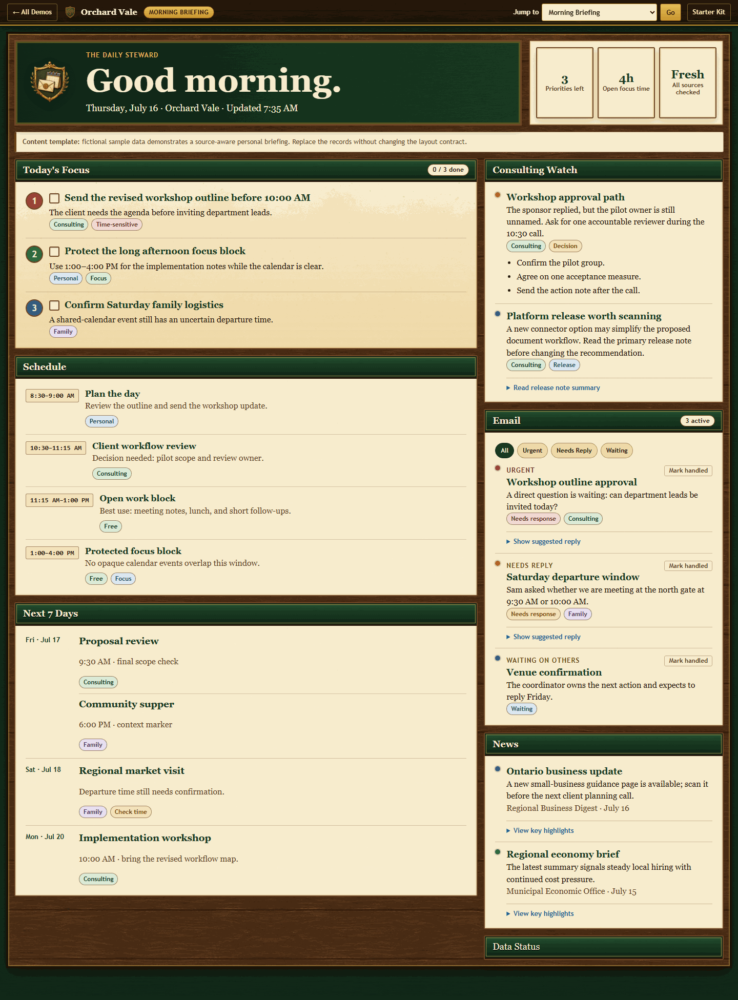
Content Template
Daily Briefing
Morning Briefing
Source-aware daily dashboard for priorities, consulting signals, schedule and free blocks, seven-day outlook, email triage, news, and suggested replies.
Open Demo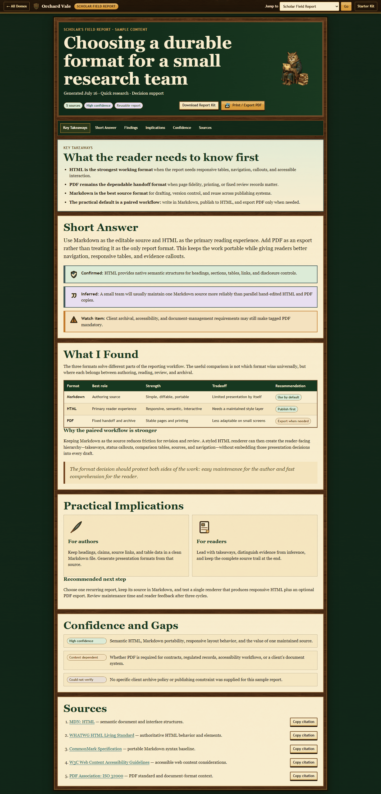
Content Template
Sourced Report
Scholar's Field Report
Formal sourced-report pattern with key takeaways, short answer, evidence status, comparison tables, practical implications, confidence gaps, and sources.
Open Demo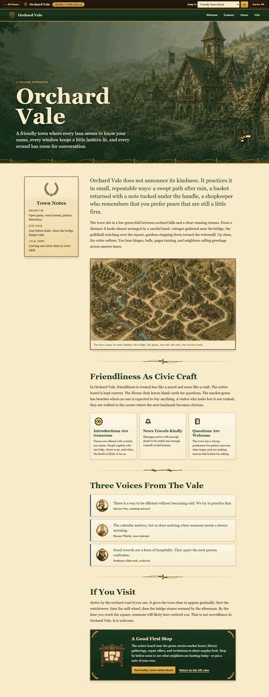
Civic & Editorial
Editorial Proof
Friendly Town
A readable editorial proof page about Orchard Vale as a welcoming place. Best first stop for tone, scenery, parchment rhythm, and warm storybook styling.
Open Demo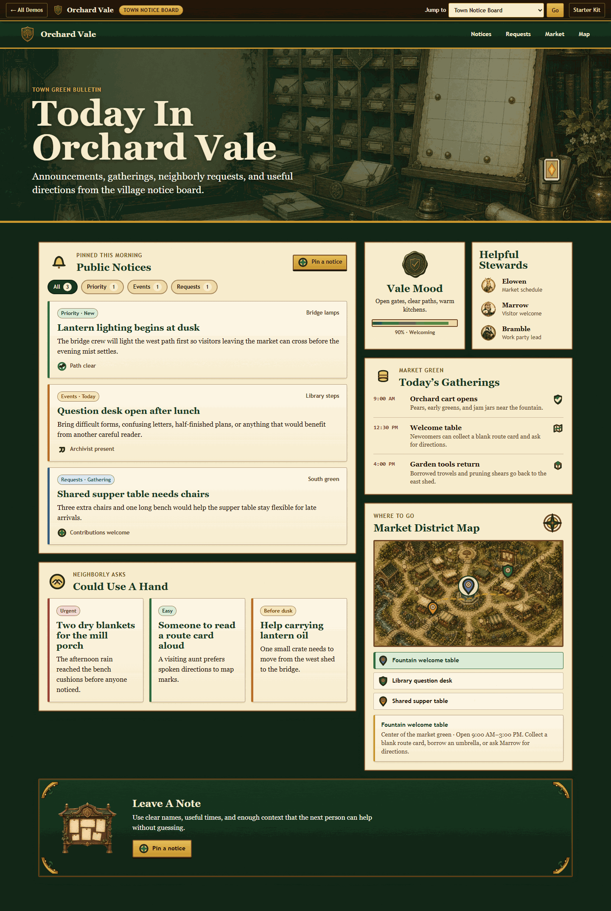
Civic & Editorial
Public Info
Town Notice Board
A public dashboard with notices, community events, steward avatars, district map cards, civic requests, badges, and neighborhood information patterns.
Open Demo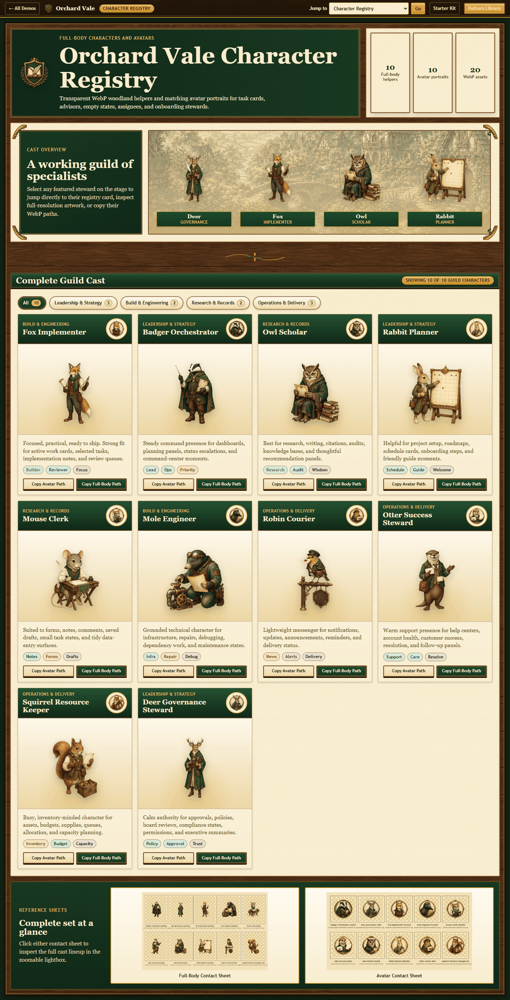
Specimen Gallery
20 Character Assets
Character Registry
Full cast showcase for every Orchard Vale full-body helper and matching avatar, with role filtering, one-click path copy, and an accessible lightbox.
Open Demo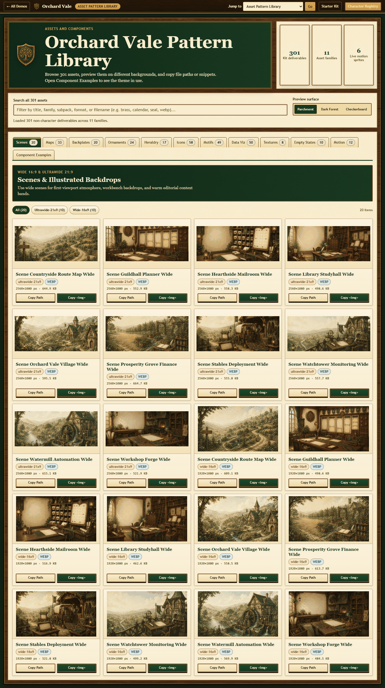
Specimen Gallery
301 Kit Assets
Asset Pattern Library
Browse 301 assets and copy paths or snippets. Use the Component Examples tab to try buttons, charts, and motion before adding them to your page.
Open Demo